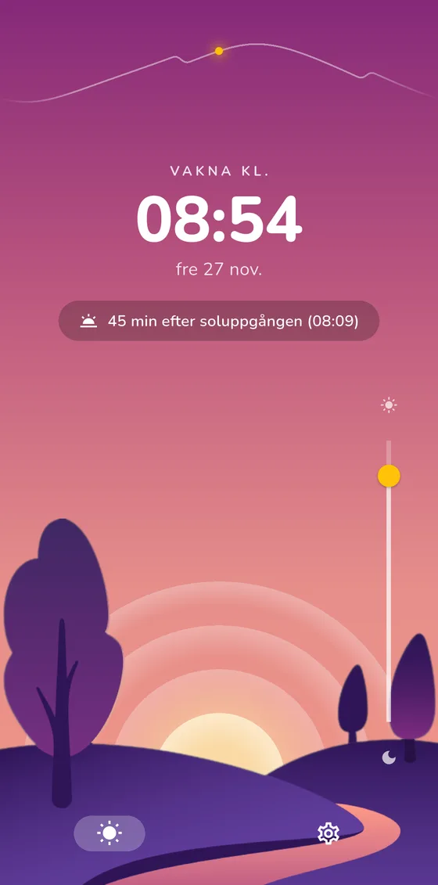

Soluppgången flyttar sig lite varje dag. Det borde ditt alarm också göra. Wake at Sunrise räknar ut morgondagens soluppgång för exakt din plats och ringer just då – eller så många minuter före eller efter som passar dig.

Så fungerar det
Appen behöver veta var på jorden du vaknar. Det är det enda den ber om – och det stannar i din telefon.
Ring precis vid soluppgången, eller några minuter före eller efter. Välj vilka veckodagar alarmet är på.
Varje natt riktar alarmet tyst in sig på morgondagens soluppgång. När gryningen glider genom året följer din väckning med.
Funktioner
Ett enda jobb – att väcka dig i gryningen – gjort omsorgsfullt.
Inte ett genomsnitt för staden – den faktiska soluppgångstiden där telefonen är, uträknad i enheten med astronomisk matematik.
Ange hur mycket sömn du vill ha och hur lång tid du behöver för att varva ner. Appen räknar baklänges från morgondagens soluppgång och påminner dig om att gå och lägga dig i tid.
Ett diagram över soluppgångens förskjutning under hela året – med en punkt på idag – så att du vet vart dina morgnar är på väg.
Ringer över låsskärmen, klarar omstarter och kan åsidosätta systemvolymen, så att en tyst telefon inte betyder en missad morgon.
Ingen vädertjänst, ingen server. Soluppgången räknas ut lokalt, så alarmet fungerar i flygplansläge och långt från allt nät.
Helt översatt, med snoozetid, volym och veckodagar som går att ställa in.
Integritet
Den enda behörighet i appen som är värd att nämna är plats – och den används till exakt en sak: att räkna ut soluppgången där du är.
Tidig åtkomst
Wake at Sunrise ska snart starta en sluten beta på Android. Gå med i testgruppen så får du installationslänken så fort den öppnar.
Gå med i testgruppenGratis, inget att köpa. Använd det Google-konto som du ska installera med – det är så Google Play vet att appen ska visas för dig.
Tidig åtkomst
Wake at Sunrise är i sluten beta på Android. Två snabba steg så är den din – din feedback formar lanseringen.
Google Play behöver ha ditt konto på testarlistan innan appen visas för dig. Redan med? Hoppa till steg 2.
Gå med i gruppenÖppna det här på telefonen som du ska testa med, inloggad på samma Google-konto.
Öppna testet på Google PlayAtt testa är gratis och det finns inget att köpa. Behåll gärna appen installerad i ett par veckor – Google räknar testare som testar utan avbrott innan en ny app får publiceras.
Ladda ned
Wake at Sunrise finns på Google Play. Gratis, inga annonser, inget konto.
Ladda ned på Google PlayTidig åtkomst
Wake at Sunrise håller på att avsluta en sluten beta på Android. Vill du vara med? Skicka ett kort mejl så får du länken.
Be om betalänken